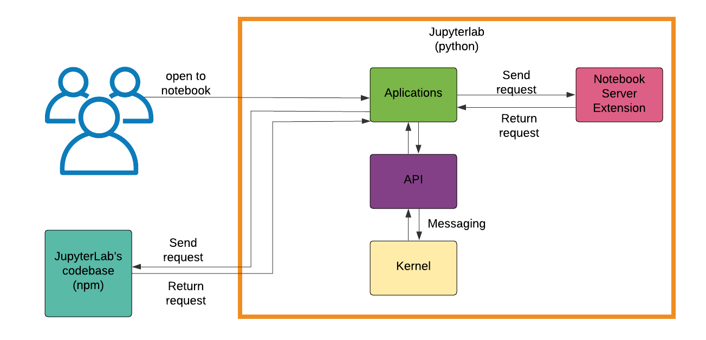
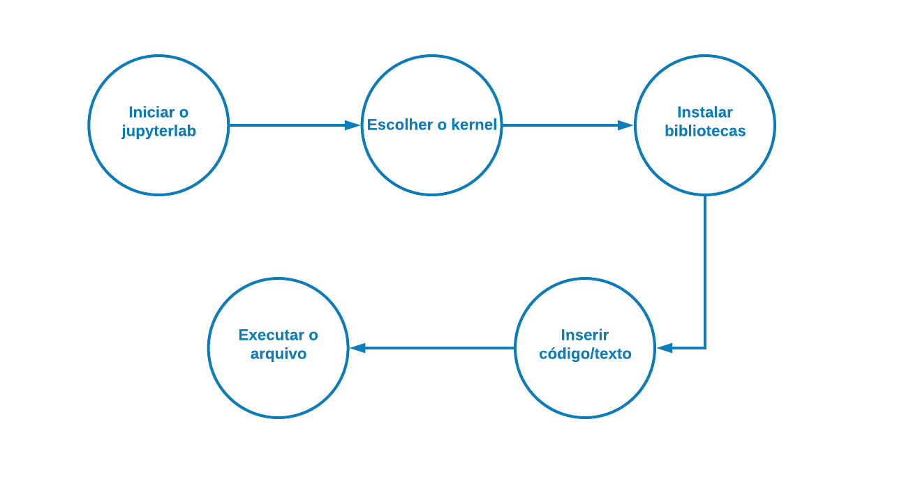

Arquitetura do JupyterLab
Autores
Este documento foi produzido por Helena Mylena Cunha Dantas.
- Matrícula: 117210323
- Contato: helena.dantas@ccc.ufcg.edu.br
- Projeto documentado: https://github.com/jupyterlab/jupyterlab
Descrição Arquitetural – Ambiente extensível do Jupyter Notebook para computador.
Este documento foi produzido na disciplina de Arquitetura de Software da UFCG e descreve a arquitetura do projeto JupyterLab. A descrição é baseada no modelo C4.
Descrição Geral sobre o JupyterLab
O JupyterLab é a uma interface de usuário para o Project Jupyter, que oferece todos os blocos de construção familiares do Notebook Jupyter clássico (notebook, terminal, editor de texto, navegador de arquivos, saídas ricas, etc.) em uma interface de usuário flexível e poderosa.
O ambiente extensível do Jupyter Notebook para computador
Objetivo Geral
O objetivo desse projeto é implementar uma interface para computador que permita ao usuário trabalhar de forma flexível, integrada e extensível com documentos, blocos de notas Jupyter , editores de texto, terminais e componentes.
Objetivos Específicos
O JupyterLab permitirá que vários documentos e atividades sejam organizados um ao lado do outro na área de trabalho fazendo uso de guias e divisores. Além disso, permitirá novos fluxos de trabalho interativos. Também será oferecido um modelo unificado para visualizar e manipular formatos de dados e, com isso, serão compreendidos muitos formatos de arquivo, podendo também exibir uma rica saída de kernel nesses formatos. O usuário poderá personalizar sua experiência através de atalhos de teclados personalizáveis e com as extensões do JupyterLab para aprimorar qualquer parte do JupyterLab, incluindo novos temas, editores de arquivo e componentes personalizados.
Contexto
O JupyterLab é composto de duas partes principais:
- Código base: Um package npm que possui a maior parte do código base do projeto.
- Jupyterlab: compreende o código Python para o projeto, incluindo a extensão do servidor de notebook, interface de linha de comando do JupyterLab, pontos de entrada e testes Python. Possui os recursos JavaScript finais construídos que são distribuídos com o pacote Python.
O package npm contém vários subpacotes em TypeScript que são inclusos no package em Python. É nele que está grande parte do código fonte. Já o packagem em Python contém o servidor e distribui o código TypeScript.

Containers
O JupyterLab possui os seguintes sistemas:
- Aplications
- API
- Kernel
- Servers
O processo inicia quando o usuário abre um notebook no Jupyterlab. A aplicação envia uma requisição ao servidor, se comunica com a API. A API irá enviar uma mensagem ao Kernel para que ocorra a interpretação do código e retornará a mensagem para a API.

Componentes
Há três principais componentes na aplicação do jupyterlab:
- jupyter_console: é o terminal da aplicação jupyter
- qtconsole: é um aplicativo Qt para computação interativa com saída rica
- notebook
Visão de informação
Como já visto antes, o jupyterlab permite que você trabalhe com documentos e atividades como blocos de notas Jupyter , editores de texto, terminais e componentes personalizados de maneira flexível, integrada e extensível.
As etapas para criar um documento no jupyterlab são:
- Iniciar o jupyterlab;
- Escolher o kernel;
- Instalar bibliotecas;
- Inserir código/texto;
- Executar o arquivo.
